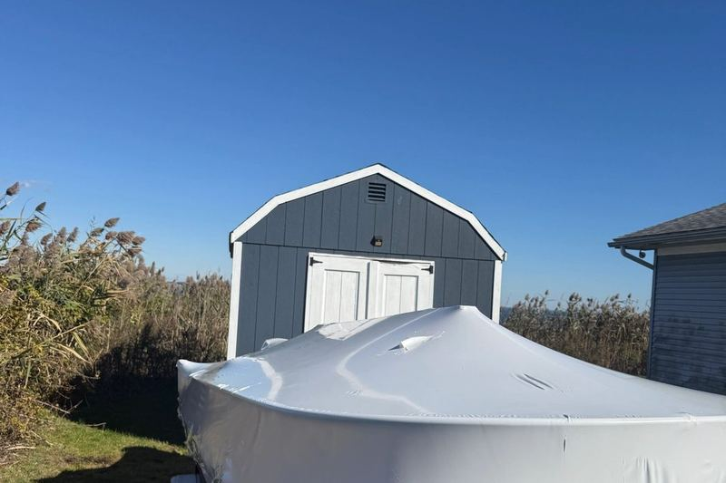

★★★★★
“Matt was a pleasure to work with and did a great job detailing my 2…”Read the full review →
David Tuvlin24 July 2026
Home / Service Areas / Fairfield
A town of mostly smaller boats, with two municipal marinas and a busy mooring field at Southport.
Fairfield is roughly twenty minutes down I-95 from our shop in Milford. The town runs two public marinas, and between them they account for most of the boats we see here.
It is a smaller-boat town by design. South Benson takes vessels from about 14 to 36 feet, and Ye Yacht Yard at Southport handles small craft, so per-foot pricing on a Fairfield detail usually lands at the friendlier end of our range.
Where we typically work in Fairfield:

Most Fairfield boats are open or partially open, which means the gelcoat, seating, and non-skid take the full sun all season with no cabin top shading them. Oxidation on a 22-foot center console kept at South Benson typically shows up faster than on a comparable boat with more covered surface.
Because slips here are seasonal and the marinas empty out for the winter, timing matters. A polish and sealant just before launch in April, and a proper wash and wax before haul-out, covers most owners well. Fairfield's marinas open in mid-April, so we book Fairfield work heavily in late March and early April.
The same packages we run across the shoreline. Restoration and seasonal work is quoted after a look at the boat.
“Matt was a pleasure to work with and did a great job detailing my 2…”Read the full review →
David Tuvlin24 July 2026
“Matt and team compounded and waxed my boat today, very plea…”Read the full review →
Bill Viggiano22 July 2026
“Matt and his team did a great job bringing the shine back on my 20…”Read the full review →
Matt Kemish13 July 2026
“Matt and his team do excellent work. He recently waxed my boat and it looks amazing.”
H. Richard TalbotFacebook review
Scroll for more, or read them all on Facebook.
Call or send a message for a free, no-pressure quote on any service.